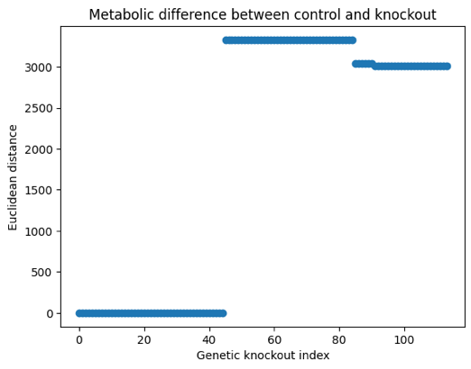

Title: Subtypes of type 2 diabetes from genetic knockouts in HumanGEM genome-scale model show 5 signature metabolic states
Author: Noorul Ali, MS (bioengineering), Tufts University, Medford, MA 02155, United States
Correspondence: Automated
Abstract
Introduction
Methods
Results
Discussion
References
Appendix
Type 2 diabetes is proposed to have multiple subtypes sharing a common symptom, persistently high levels of glucose in blood. Diabetes is a metabolic disorder characterized by metabolic dysfunction. Here, 5 signature metabolisms are identified by performing genetic knockout flux balance analysis on a genome-scale model (HumanGEM). Signature metabolisms differ from each other highlightng subtypes of type 2 diabetes.
Type 2 diabetes is projected to affect 600 million people by 2030 [1]. As countries develop and populations earn higher incomes, caloric consumption increases. A direct correlation exists between sustained high caloric consumption and prevalence of type 2 diabetes. Mice become diabetic aFer a regular high-fat diet. These mice are the main type of experimental animal used in type 2 diabetes research. The prevalence of type 2 diabetes is increasing. While higher incomes are one aspect of this disease, genetic components have been identified [5].
While many genome-wide association studies (GWAS) have highlighted statistically significant genetic components to type 2 diabetes (>700), their effects on bodily function are sparsely known. The results of GWAS studies are primarily single nucleotide polymorphisms (SNPs) on chromosomes. Certain loss-of-function SNPs are easy to characterize mechanistically, but they are much rarer than polymorphisms or risk alleles whose effects are not completely known. A gene is a section of the chromosome responsible for a protein. Unfortunately, the results of GWAS studies do not directly translate to gene function. A single-nucleotide polymorphism could turn a gene off, but it could also have a host of other downstream effects in a cell, including lower effciency enzymes or even no effect in the case of isozymes. It could also change an animo acid in a protein to another, adding another layer of complexity on phenotypic correlations to single nucleotide polymorphisms. Simply put, it has proven diffcult to obtain phenotypic correlations from GWAS data.
Flux balance analysis models reactions as links in a reaction graph, with nodes as metabolites. Links, or reactions, are catalyzed by enzymes that are the products of genes. Flux, a number, is the quantity of metabolite flowing through the link of a reaction graph, given known ranges of input metabolites to the graph (network). Within given constraints, flux through a specific reaction, termed objective function, is maximized. The fluxes abained by other links in the reaction graph are a measure of how active a certain reaction pathway is compared to others. Flux balance analysis and its variant flux variability analysis are used here to characterize states of metabolism. HumanGEM is a 12,995-reaction graph available online as an SBML model [8]. We perform flux balance analysis on HumanGEM, with and without genetic knockouts of genes obtained from GWAS data. Genetic knockouts switch off certain reactions in the HumanGEM reaction network to reveal 5 signature metabolisms. This matches the current understanding that there are 3-5 subtypes of type 2 diabetes [4,8,9].
Since type 2 diabetes is a metabolic disorder with genetic components attached, here metabolic effects of genetic variants are studied. Type 2 diabetes is also said to be a collection of diseases characterized by a single symptom: high levels of glucose in blood or hyperglycemia. The underlying causes of type 2 diabetes are numerous and seem to form distinct subtypes. Subtypes of type 2 diabetes are monogenic variants, maturity onset diabetes of the young (MODY), and latent autoimmune diabetes of adults. These are characterized by single or specific genetic variants that lead to hyperglycemia through known mechanisms. There are more subtypes of type 2 diabetes including insulin-resistant, insulin-deficient, and obesity-related subtypes. This work aims to highlight metabolic signatures through altered reaction fluxes. These signature metabolisms are shared between knockouts of GWAS-identified genes for type 2 diabetes.
Systems biology modeling using Human-GEM
Human-GEM is a systems biology model available freely online [8]. It contains a metabolic reaction network compartmentalized by organs and organelles. This reaction network also contains genes linked to reactions through GPR (gene protein reaction) labels. Each reaction has a list of associated genes. This model is modeled as a graph of reactions. Constraint-based optimization is performed using COBRAPy [10].
Flux balance (FBA) using COBRAPy
COBRAPy is a Python package that allows analysis of systems biology models. Constraint-based metabolic modeling is done by inpukng external fluxes and other environmental conditions as constraints on a metabolic reaction network. The result of such constraint-based modeling is a flux vector containing possible fluxes each reaction in the reaction network takes under given conditions. Flux variability analysis (FBA) is a technique using constraint-based modeling to obtain ranges on flux of each reaction in the reaction network. FBA is performed on Human-GEM under normal biomass growth conditions to obtain standard flux ranges of each reaction.
Genetic knockouts using COBRAPy
COBRAPy offers functionality to perform genetic knockouts on reaction networks. Essentially, reactions linked to genes in the GPR portion of the model can be turned off, with flux constrained to zero, to simulate a genetic knockout in a metabolic reaction network. When metabolism is simulated, a certain flux constrained to zero is assumed equivalent to the absence of an enzyme required for that reaction, given by GPR data in the model. Significantly associated genetic risk variants are assumed to cause enzyme function loss. Here, we simulate genetic knockouts for genes significantly associated with type 2 diabetes. These genes, obtained from GWAS data, are selected for their links in the GPR database. Reactions associated with these genes are constrained to zero. FBA is performed on these knockout reaction networks to find differentially expressed reactions and perturbed cellular states.
5 signature metabolic states iden.fied by gene.c knockouts in HumanGEM genome-scale model Biomass growth was kept as the objective function while performing flux balance analysis as described in Methods. Flux balance analysis was performed 114 times in total for 113 genetic knockout conditions and one control with no knockouts. 114 reaction flux vectors were obtained as solutions of flux balances for 1 control condition and 113 knockout conditions. We consider these flux vectors as signatures of metabolism. Fluxes through reaction vectors offer insight into upregulated or downregulated pathways compared to control with no knockouts. 5 unique metabolic signatures in 113 knockout conditions were identified. One signature metabolism, shown by 44 genetic knockouts (listed in appendix A), is identical to control metabolism with no knockouts (Figure 1).

Figure 1: Number of genetic knockouts that share the same metabolic signature. Metabolic signatures are noted with unique flux vectors obtained by flux balance analysis of HumanGEM reaction network with genetic knockout of genes identified by GWAS datasets. Signature metabolism 1 is identical to metabolism with no knockout.
GWAS knockout metabolisms differ from normal metabolism under biomass growth objec.ve It was observed that signature metabolisms 2,3,4 and 5 significantly differ from normal metabolism in terms of Euclidean distance between flux vectors of knockout condition and control condition. While metabolic signature 2 is similar to metabolic signature 3, it is significantly different from normal condition. As seen in Figure 2, sum of flux differences between knockout and control conditions for 113 knockout conditions shows metabolic signatures at 4 levels, highlighted by the same sum shown by multiple knockouts. Multiple reaction pathways, related to glucose transport, glucose processing in mitochondria, and faby acid intracellular transport were found dysregulated compared to control.
Figure 2: Differences between knockout and control metabolisms highlighted by Euclidean distances between fluxes in control and knockout conditions. Same levels shared by multiple knockout indices indicate same flux difference with control shared across multiple genetic knockouts.
Type 2 diabetes is diagnosed through exclusion. A common symptom, hyperglycemia or persistent high blood glucose levels, in the absence of certain biomarkers of other types of diabetes such as type 1 diabetes or maturity-onset diabetes of the young (MODY), is diagnosed as type 2 diabetes. It has been proposed in literature that multiple subtypes of type 2 disease exist. All these share a common symptom: hyperglycemia, though they can differ in underlying mechanisms for high levels of blood glucose. Primarily, these subtypes can be classified into insulin-deficient and insulin-resistant. Insulin-deficient type 2 diabetes patients have reduced or no production of endogenous insulin. Insulin-resistant type 2 diabetes patients produce endogenous insulin at normal or even exceeded levels, but an acquired resistance to insulin causes dysfunction in the signaling function of insulin.
Diabetes is a metabolic disorder. It affects many cell types including skeletal muscle, fat-storing adipocytes in the liver and pancreatic beta cells. Here, altered metabolism under type 2 diabetes was demonstrated through changed flux vectors. Unique flux vectors highlight different metabolisms which are shared among different genetic knockouts. This suggests that though type 2 diabetes has many genetic components, their metabolic effects may be shared and easily characterizable. Further study should be performed to characterize these subtypes that are seen in slightly disjoint signatures, that have different pathways dysregulated from each other.
Future work includes parsing pathways with different fluxes in signature metabolisms into biologically relevant biomarkers. Characterization of a patient’s subtype of type 2 diabetes may be made to beber guide management of the disease. Current long-term management of type 2 diabetes includes regular delivery of insulin, which may exacerbate insulin resistance requiring higher dosage of insulin over time. A beber management strategy is needed for type 2 diabetes and studying metabolic dysfunction will provide mechanistic insight on how the disease progresses. Another avenue being explored is how signature metabolisms differ from each other to highlight uniquely dysregulated pathways in each subtype metabolism of type 2 diabetes.
[1]: Saeedi P , Petersohn I, Salpea P, Malanda B, Karuranga S, Unwin N, Colagiuri S, Guariguata L, Motala AA, Ogurtsova K, Shaw JE, Bright D, Williams R; IDF Diabetes Atlas Commibee. Global and regional diabetes prevalence estimates for 2019 and projections for 2030 and 2045: Results from the International Diabetes Federation Diabetes Atlas, 9th edition. Diabetes Res Clin Pract. 2019 Nov;157:107843. Link.
[2]: Galicia-Garcia U, Benito-Vicente A, Jebari S, Larrea-Sebal A, Siddiqi H, Uribe KB, Ostolaza H, Marrn C. Pathophysiology of Type 2 Diabetes Mellitus. Int J Mol Sci. 2020 Aug 30;21(17):6275. Link. PMID: 32872570; PMCID: PMC7503727.
[3]: Xue A, Wu Y, Zhu Z, Zhang F, Kemper KE, Zheng Z, Yengo L, Lloyd-Jones LR, Sidorenko J, Wu Y; eQTLGen Consortium; McRae AF, Visscher PM, Zeng J, Yang J. Genome-wide association analyses identify 143 risk variants and putative regulatory mechanisms for type 2 diabetes. Nat Commun. 2018 Jul 27;9(1):2941. Link. PMID: 30054458; PMCID: PMC6063971.
[4]: Udler MS, Kim J, von Grobhuss M, Bonàs-Guarch S, Cole JB, et al. (2018) Type 2 diabetes genetic loci informed by multi-trait associations point to disease mechanisms and subtypes: A soF clustering analysis. PLOS Medicine 15(9): e1002654. Link
[5]: Scob et al; DIAbetes Genetics Replication And Meta-analysis (DIAGRAM) Consortium. An Expanded Genome-Wide Association Study of Type 2 Diabetes in Europeans. Diabetes. 2017 Nov;66(11):2888-2902. Link. Epub 2017 May 31. PMID: 28566273; PMCID: PMC5652602.
[6]: Vujkovic, M., Keaton, J.M., Lynch, J.A. et al. Discovery of 318 new risk loci for type 2 diabetes and related vascular outcomes among 1.4 million participants in a multi-ancestry meta-analysis. Nat Genet 52, 680–691 (2020). Link
[7]: Mahajan, A., Wessel, J., Willems, S.M. et al. Refining the accuracy of validated target identification through coding variant fine-mapping in type 2 diabetes. Nat Genet 50, 559–571 (2018). Link
[8]: Robinson JL, Kocabaş P , Wang H, Cholley PE, Cook D, Nilsson A, Anton M, Ferreira R, Domenzain I, Billa V, Limeta A, Hedin A, Gustafsson J, Kerkhoven EJ, Svensson LT, Palsson BO, Mardinoglu A, Hansson L, Uhlén M, Nielsen J. An atlas of human metabolism. Sci Signal. 2020 Mar 24;13(624):eaaz1482. Link
[9]: Khoshnejat M, Kavousi K, Banaei-Moghaddam AM, Moosavi-Movahedi AA. Unraveling the molecular heterogeneity in type 2 diabetes: a potential subtype discovery followed by metabolic modeling. BMC Med Genomics. 2020 Aug 24;13(1):119. Link
[10]: Ebrahim, A., Lerman, J.A., Palsson, B.O. et al. COBRApy: COnstraints-Based Reconstruction and Analysis for Python. BMC Syst Biol 7, 74 (2013). Link
A. Genes whose knockout results in signature metabolism 1 (identical to control):
['SLC39A8', 'BTD', 'LPL', 'XYLT1', 'ATP2A3', 'DMGDH', 'SCD5', 'GCK', 'ART3', 'UHRF1', 'UBE2E2', 'MARCHF3', 'YKT6', 'ALDH1A2', 'PDHX', 'UBE2O', 'PRKD1', 'APOE', 'EP300', 'GBA2', 'PTEN', 'KCNJ11', 'PLCB3', 'ASAH1', 'ENO3', 'MTAP', 'SLC25A26', 'PGM1', 'PTDSS1', 'HPSE2', 'POLK', 'UBE2D3', 'AOC1', 'GUCY1B1', 'LDHB', 'SETD5', 'CHST6', 'TPCN2', 'SLC2A2', 'MGAT1', 'ACP6', 'ATP8B2', 'SGPL1', 'DGKD']
B. Gene whose knockout results in signature metabolism 2:
FARSA
C. Genes whose knockout results in signature metabolism 3:
['HSD17B12', 'CTSH', 'AQP10', 'DGKB', 'FADS2', 'PEPD', 'NUP160', 'NUP133', 'SLC7A7', 'DGAT1', 'SRR', 'TNKS2', 'PDIA6', 'ADCY5', 'MSRA', 'HECW1', 'NOS1', 'FAM227B', 'ABCC8', 'PDE3A', 'AOAH', 'USP44', 'USP3', 'PARP8', 'USP36', 'PKLR', 'CPA1', 'HERC2', 'PTPRQ', 'SLCO4A1', 'GALNT3', 'SLC13A3', 'ACE', 'ACHE', 'GYS2', 'ENPP3', 'DNMT3A', 'LPIN2', 'UBE2Z']
D. Genes whose knockout results in signature metabolism 4:
['DDC', 'SLC22A3', 'POLR1D', 'PLA2G6', 'NSD1', 'ATP2A1']
E. Genes whose knockout results in signature metabolism 5:
['ABCA1', 'MARCHF1', 'PDE3B', 'OARD1', 'SLC16A13', 'BRAP', 'ACP7', 'PNPLA3', 'APIP', 'ABO', 'ABCC1', 'HERC1', 'CPA6', 'UBE3C', 'CTBP1', 'USP48', 'ACSL1', 'SLC1A2', 'COPB1', 'ST6GAL1', 'DGKG', 'PAM', 'HS6ST3']